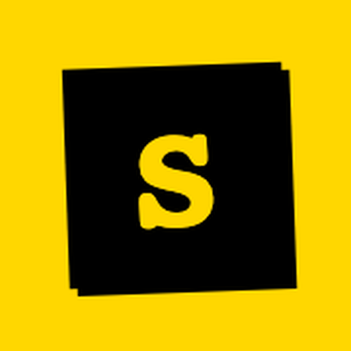

Original workspace, desktop frame
Slock Desktop opens the hosted workspace after launch, then keeps the shell controls available around the session.

Slock DesktopSlock Desktop
Open the original Slock workspace in a native shell, keep local services close, and carry one visual rhythm across startup, settings, and workspace sessions.
Workflow
Slock Desktop opens the hosted workspace after launch, then keeps the shell controls available around the session.
Startup, injected workspace settings, and the remote page share the same appearance mode and accent color.
The desktop console reads available servers from the signed-in workspace and starts the chosen daemon in the background.
Control Surface
Appearance, language, server selection, and release checks live in the desktop layer, so the workspace remains focused on conversations and tasks.
GitHub Pages